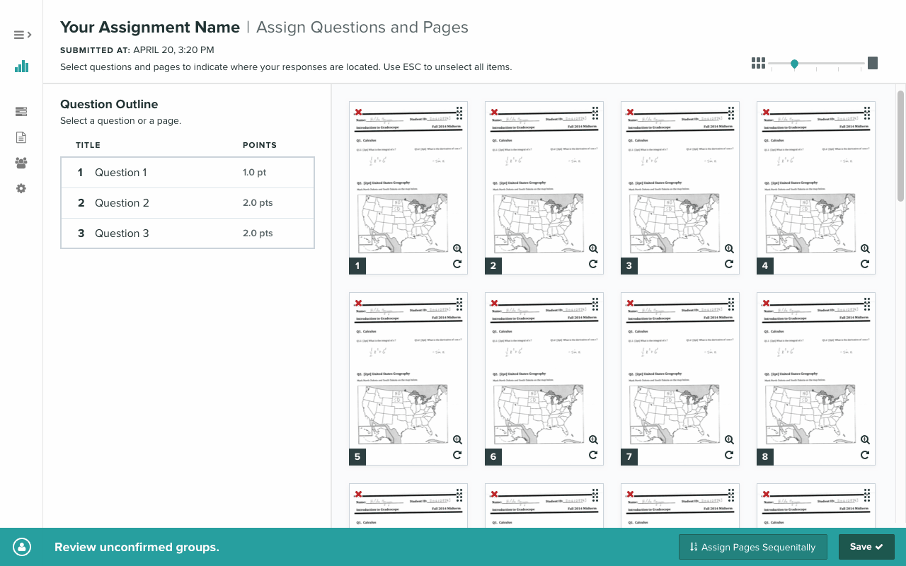
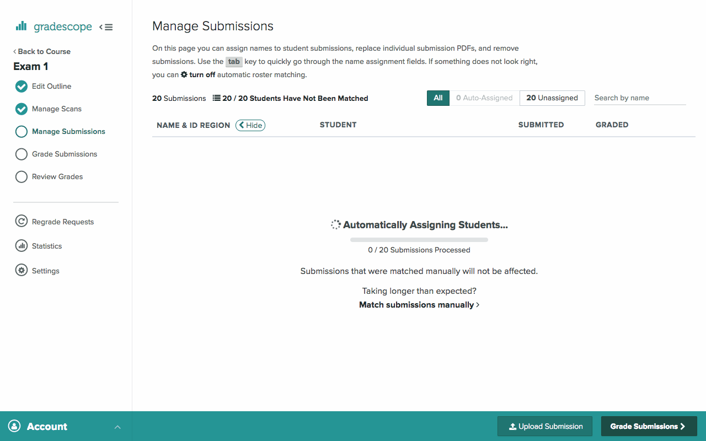
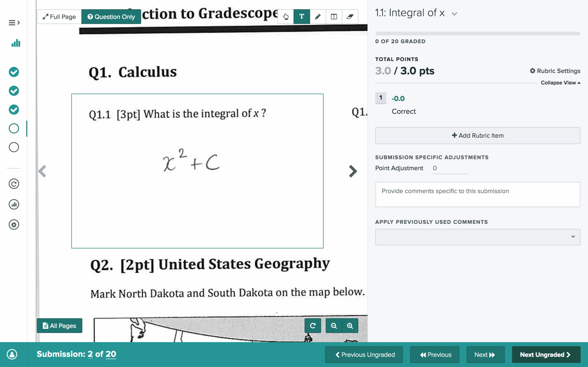
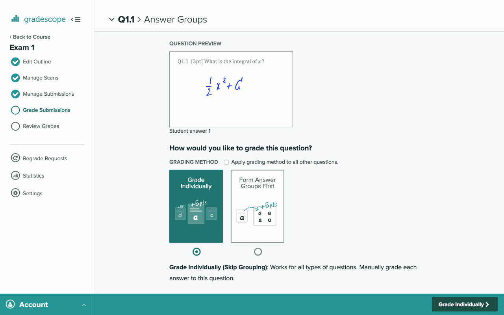
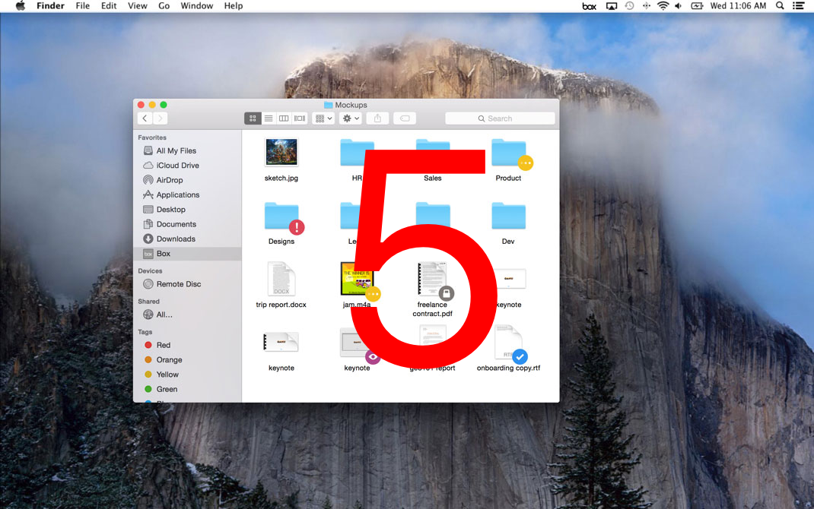
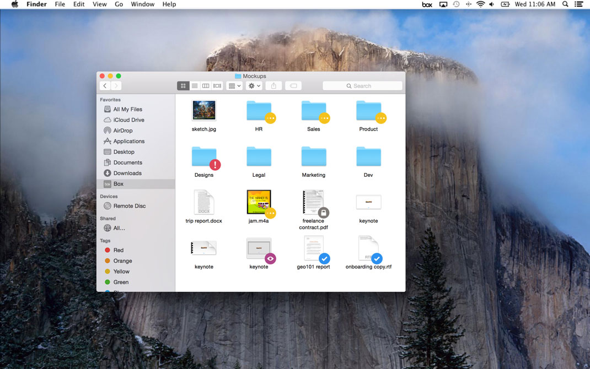
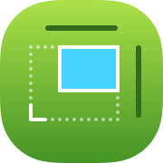

Kevin
Gutowski
Physicist turned designer
Bringing Physics to Design
I often get asked if I use anything I learned from physics in my designs.
And while it is useful to have an understanding of linear algebra and principle component analysis as artifical intelligence grows embedded into our daily lives,
the thing that I use the most from physics is....
The
Scientific
Method
to my design process
Gradescope
Gradescope is an online platform where instructors can grade paper-based assignments. Here are a few samples of my recent work.






Student Submission - Assign Questions & Pages
Students submit a wide variety of work on Gradescope ranging from lab reports to short quizes. When submitting work, students are required to indicate where their responses located for each question. Depending on the number of questions and number of pages submitted, it's often easier to map questions to pages or pages to questions. This interface supports both workflows.
Automatic Student Matching
One of the inconviences of digital grading is somehow mapping digitized submissions to students in a roster. Prevously, TAs and instructors would have to manually match each student to each submission. Now, instructors just need to review our A.I. system that does it for them.
Text Annotations
The ability to type directly on a student's submission is one of Gradescope's most popular feature requests. Rather than doing a "Preview" style approach where text is applied directly on top of the page, we opted for a note style and added a dot so that instructors can pinpoint the exact location for their feedback and where it refers to.
A.I. Assisted Grading
Instructors are able to grade faster using groups of answers. An A.I. system reviews the student marks to a question and forms them into suggested groups. The grader then reviews the proposed groups, moves any uncertain ungrouped answers into groups, and then is able to grade each group.
New, Faster Grading Page
Students submit a wide variety of work on Gradescope ranging from lab reports to short quizes. When submitting work, students are required to indicate where their responses located for each question. Depending on the number of questions and number of pages submitted, it's often easier to map questions to pages or pages to questions. This interface supports both workflows.
Resources
for getting started in design
Craft
Specifics: The 8-Point Grid
Bryn Jackson details how to establish a layout system and how to get pixel perfect results.
Refactoring UI
Steve Schoger breaks down his design process and shares many useful tips and tricks.
Designing Fluid Interfaces
Chan Karunamuni, Nathan de Vries, and Marcos Alonso share how to design with gestures and motion that feel intuitive and natural.
Process
IDEO Field Guide
This PDF was my go-to when starting out. It's a great guide to help you step-by-step work through your design problem.
Buzzfeed's Product Design Roles
Curious to know what seperates a beginner designer vs a senior designer? This framework can help demistify what type of skills you can improve on to further your carrer.
Essential Design Principles
Learn some of the fundamentals of app design so you can learn how to make things that satisfy human needs for safety, meaning, achievement, and beauty.
Community
SpecFM: A Spectrum Community
Spectrum is kinda like slack but for communities! SpecFM is a community centered around the SpecFM podcasts.
Design Life Slack
The Design Life podcast has fostered a welcoming community with all kinds of creatives. A montly cost keeps the community super motivated and focused on helping eachother out.
Design Details Podcast
Want to know more about the people who build all kinds of apps? Design Details is a great representation of where design has been, where it is right now, and where it is going.
Color Contrast Picker
Don’t just satisfy an algorthim. Learn why your colors are inaccessible and intutively know how to fix them.
Tame your colors

Nudge Right to Left
Little to the left. Little to the right. But fixed from the right. Get your rectangles exactly where you want them.
Nudge to your heart's content
Titles of Chef’s Table
Animate your titles just like the show: smooth, precise, and oh so tasty looking.
Slide right in